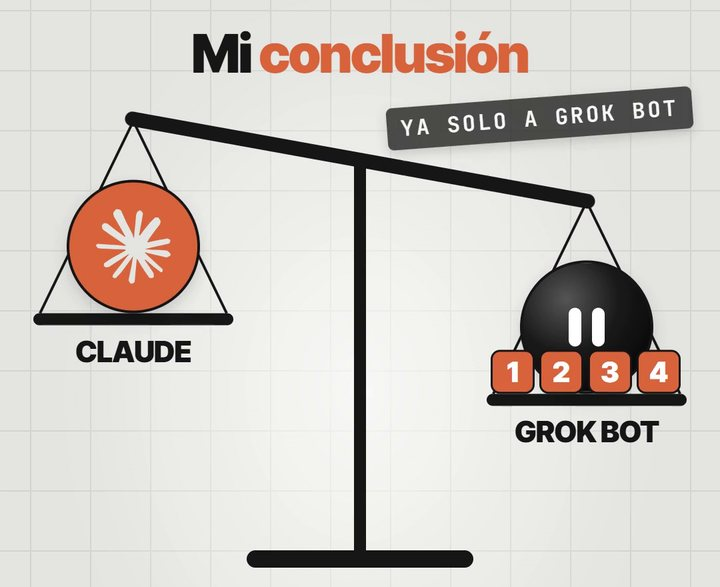
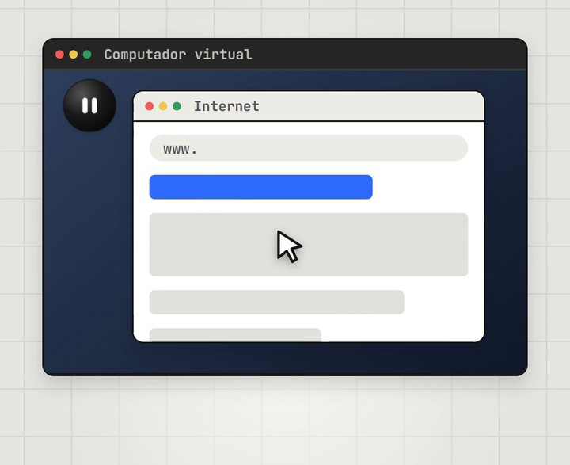
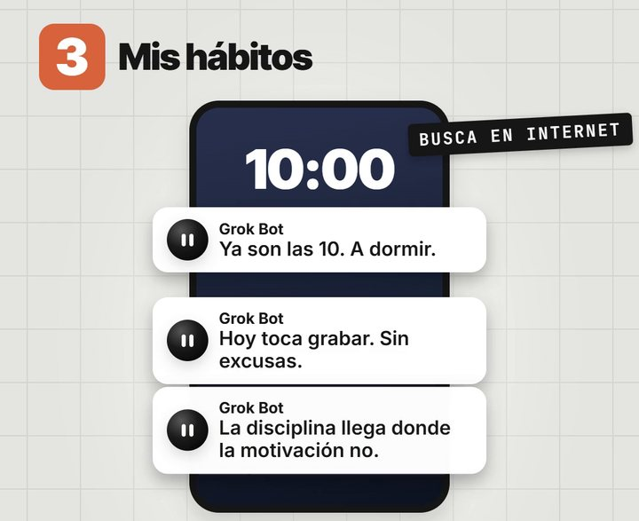
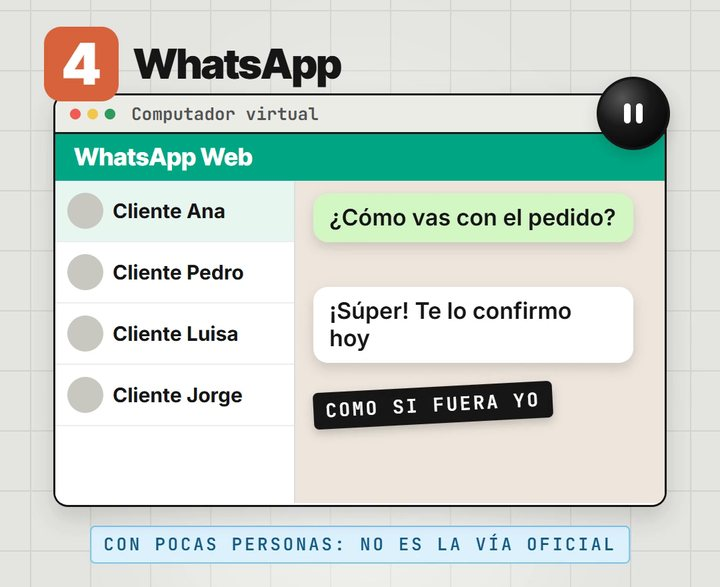

GRATIS · EN ESPAÑOL
GRATIS · EN ESPAÑOL
Tu primer agente con Grok Bot
Grok Bot es un agente que trae su propio computador en la nube, con navegador, archivos y tus cuentas abiertas. Le dices "crea un agente que haga esto" y él entra a internet y lo hace. Así lo uso yo, junto a Claude.

Claude piensa mejor; Grok Bot se mueve mejor por internet. Yo uso los dos.
🚀 Los agentes de IA con los que hago cosas como esta les están sumando entre 5.000 y 10.000 dólares al mes a los clientes con los que trabajo. Están dentro de Imperio, para multiplicar las ventas de los negocios.Al final te cuento cómo funciona ↓- 💳 No se vende solo: viene incluido en planes como SuperGrok o Cursor Pro, y tiene prueba gratis (pide tarjeta).
- ☁️ Trabaja en la nube: sigue funcionando aunque cierres tu computador. Tiene app para computador y para celular.
- ⏱️ Tu primer agente sale en unos 10 minutos. No necesitas instalar nada más.
Activa Grok Bot
Entra con tu cuenta, elige un plan que lo incluya y descarga la app en tu computador o tu celular.
Ir a Grok Bot →Abre su computador e inicia sesión
Abre la ventana del computador virtual del bot y entra a las cuentas que va a usar: ManyChat, Instagram o tu correo. Si una página te pide un código o un captcha, tomas el control y lo pones tú.

Las contraseñas nunca se las escribas en el chat: las pones tú en la ventana o en el formulario seguro que te muestra.
Crea tu agente
Escríbele en el chat qué quieres, con detalle. Él lo crea con nombre, cargo y descripción:
Crea un agente llamado [nombre]. Su trabajo es [qué hace], [cada cuánto], y me avisa por aquí cuando termine. Antes de empezar, dime qué necesitas de mí.
Los 4 usos del video, listos para copiar
Cambia lo que está entre corchetes.
1Tus recursos de ManyChat
Lo que con Claude nunca pude automatizar: cada vez que subo un reel, él monta la palabra clave.
Entra a mi ManyChat y crea una automatización para mi último reel de Instagram: cuando alguien comente la palabra [PALABRA], que le llegue por mensaje directo este texto con este link: [link]. Cuando esté lista, mándame un pantallazo.
2Imágenes y videos
Claude no genera imágenes ni videos por sí solo. Grok Bot sí, sin conectarle nada.
Créame 3 imágenes verticales para historias de Instagram sobre [tema], con este estilo: [estilo]. Y un video corto de 6 segundos de [escena]. Guárdalos en una carpeta y pásamelos.
3Recordatorios para tus hábitos
Queda como una rutina: corre sola todos los días.
Todos los días a las 9:30 p. m. mándame un recordatorio para acostarme, con una frase motivadora distinta que busques en internet. Los lunes y jueves a las 10 a. m., recuérdame grabar mis videos.

¿Tienes un gimnasio? Cambia el mensaje y ponlo a motivar a tus clientes para que no dejen de ir.
4Escribirle a tus clientes por WhatsApp
Abres tu WhatsApp Web en su computador y les escribe como si fueras tú.
Abre mi WhatsApp Web y escríbeles a estos clientes un mensaje corto y distinto para cada uno, preguntándoles cómo les fue con [producto]: [lista de nombres]. Que suene como yo, y muéstrame los mensajes antes de enviarlos.

Úsalo con poquitas personas. Las condiciones de WhatsApp prohíben los mensajes automáticos y masivos desde la app normal, y te pueden bloquear la línea. Para escribirle a muchos, usa la API oficial: aquí te enseño cómo.
Ponle reglas
En la configuración del bot escribes, en palabras, lo que puede y lo que no puede hacer. Por ejemplo:
No compres nada, no borres nada y no publiques nada sin preguntarme primero. Si una página te pide pagar, detente y avísame.
Todos tus agentes comparten el mismo computador: si entras ahí a tu banco o a tu Amazon, cualquiera de ellos podría usarlo. Abre solo las cuentas que necesitan.
Preguntas frecuentes
¿Cuánto cuesta?
No se vende por separado: viene con SuperGrok (unos 30 dólares al mes) o con Cursor Pro (unos 20 dólares al mes). Tiene prueba gratis, pero pide tarjeta.
¿Reemplaza a Claude?
No. Yo uso Claude para pensar, crear anuncios y guiones, y Grok Bot para moverse por internet y hacer las tareas repetitivas.
¿Si apago mi computador se detiene?
No. Corre en la nube: las rutinas siguen funcionando con tu computador cerrado.
¿Necesito saber programar?
No. Le hablas en palabras, como a un asistente.
Deja de hacerlo todo a mano
Haz en 3 días el trabajo de todo un mes.
Ten un equipo de marketing de 4 personas trabajando para ti por unos $25 al mes: los agentes Imperio. Te hacen:
- ✍️ El contenido y los carruseles.
- 📣 Los anuncios y los VSL.
- 🖥️ Las páginas web.
- 📊 Las campañas en Meta.
- 💬 Y hasta responden tus mensajes.
Sin saber de tecnología: solo copias, pegas y facturas.
Son los mismos agentes que hoy les suman entre $5.000 y $10.000 dólares extra al mes a los negocios con los que trabajo: automatizan todo el marketing y hacen el trabajo de 4 personas.
Escríbeme “IMPERIO” por Instagram →Te cuento cómo funciona y si encaja con tu negocio.